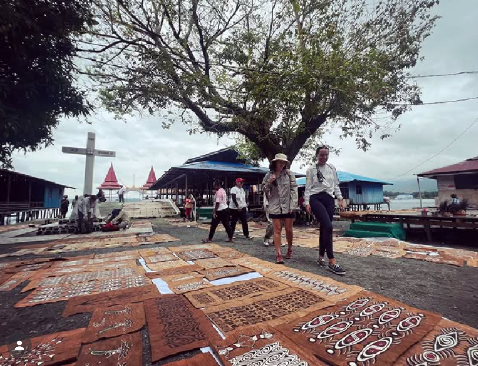
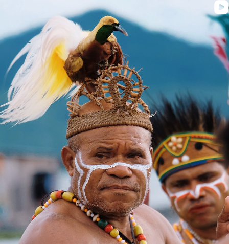
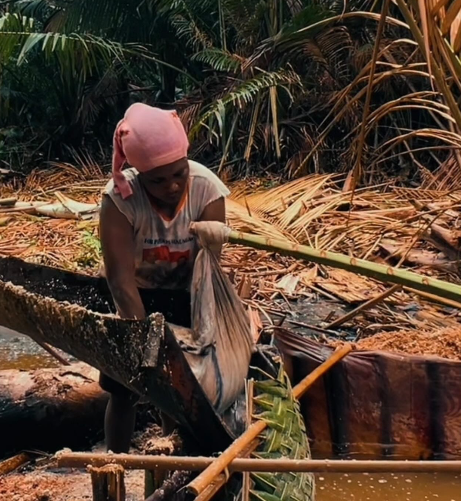
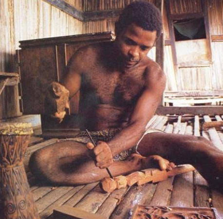

Komunitas anak muda Papua yang berfokus pada promosi pariwisata, budaya, dan ekonomi kreatif melalui media dan pemberdayaan lokal.
Pace Kreatif adalah wadah gerakan anak muda Papua yang didirikan oleh Iwan Billy E. Tokoro. Kami bergerak secara konsisten untuk mengubah narasi positif tentang potensi alam, kebudayaan, dan kearifan lokal Tanah Papua melalui kekuatan dokumentasi visual dan media digital.
Pilar utama gerakan pemberdayaan pariwisata dan ekonomi kreatif di Papua.
Mendampingi kampung-kampung adat di Papua seperti Kampung Yoboi, Doyo Lama, Hobong, dan Yokiwa agar mandiri dalam mengelola potensi wisata lokal.
Memanfaatkan platform media sosial serta dokumentasi fotografi dan videografi profesional untuk mengubah narasi publik secara positif tentang keindahan alam dan kearifan lokal Tanah Papua.
Kami percaya bahwa perubahan besar dimulai dari kolaborasi akar rumput. Komunitas Pace Kreatif terbuka bagi siapa saja—baik pegiat seni, fotografer, traveler, maupun relawan yang ingin bersama-sama memajukan pariwisata kampung di Papua.
Ikuti terus dokumentasi terbaru, cerita perjalanan, dan potret keindahan kampung adat Papua melalui kanal media sosial resmi Pace Kreatif.




Tertarik berkolaborasi, mendiskusikan potensi desa wisata, atau ingin bergabung dengan gerakan Pace Kreatif? Silakan hubungi kami melalui informasi di bawah ini.